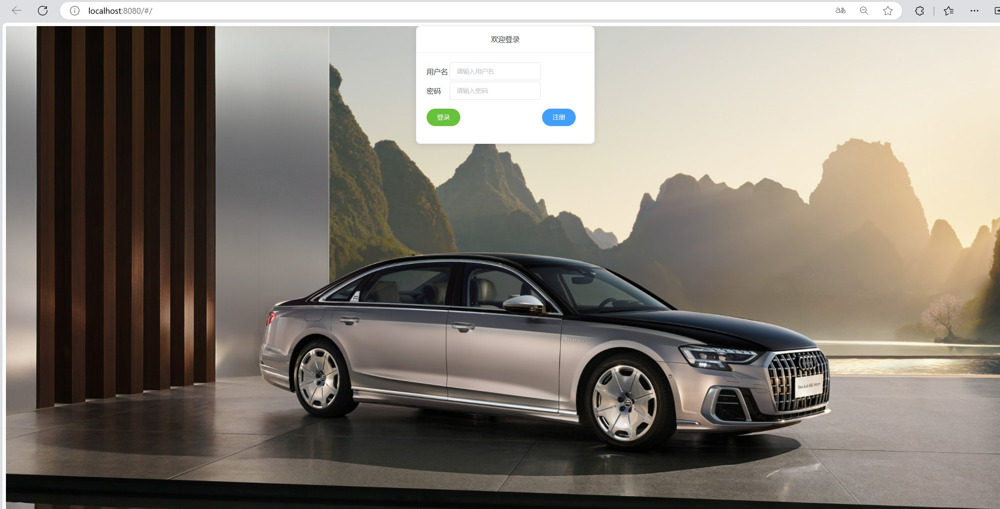

项目详情
内容：
该后台管理系统包括注册、登录、首页搜索和商品列表的增删改查功能。用户可通过注册填写基本信息并创建账户，登录时输入用户名和密码验证身份。
首页搜索功能允许用户通过关键词快速查找信息。商品管理功能支持添加新商品、删除现有商品、编辑商品信息以及按条件查询商品。
系统采用HTML、CSS、JavaScript构建前端界面，后端使用Java或Python处理业务逻辑，并通过MySQL或MongoDB存储数据，同时实施数据加密和用户认证以保障安全。负责前端页面的开发。
技术栈：
JAVA，MYSQL
HTML，CSS,JAVASCRIPT
VUE.JS,ELEMENTUI
效果截图：
